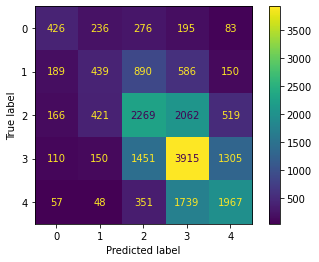

from fastai.collab import *
from fastai.tabular.all import *
path = untar_data(URLs.ML_100k)
100.15% [4931584/4924029 00:00<00:00]
August 14, 2021
We work through a problem posed in Chapter 8 of {% cite fastbook2020 %}.
(#23) [Path('u1.base'),Path('u1.test'),Path('u4.test'),Path('allbut.pl'),Path('u.item'),Path('ua.test'),Path('u.occupation'),Path('u3.test'),Path('u5.base'),Path('ub.test')...]ratings = pd.read_csv(path/'u.data', delimiter='\t', header=None,
names=['user','movie','rating','timestamp'])
ratings.head()| user | movie | rating | timestamp | |
|---|---|---|---|---|
| 0 | 196 | 242 | 3 | 881250949 |
| 1 | 186 | 302 | 3 | 891717742 |
| 2 | 22 | 377 | 1 | 878887116 |
| 3 | 244 | 51 | 2 | 880606923 |
| 4 | 166 | 346 | 1 | 886397596 |
We see that the rating can be one of the following values:
| user | title | rating | |
|---|---|---|---|
| 0 | 328 | Star Trek VI: The Undiscovered Country (1991) | 3 |
| 1 | 251 | Toy Story (1995) | 4 |
| 2 | 456 | Judgment Night (1993) | 2 |
| 3 | 653 | Raiders of the Lost Ark (1981) | 5 |
| 4 | 551 | Aliens (1986) | 4 |
| 5 | 416 | Edge, The (1997) | 4 |
| 6 | 116 | Good Will Hunting (1997) | 3 |
| 7 | 500 | Chain Reaction (1996) | 3 |
| 8 | 393 | Barb Wire (1996) | 3 |
| 9 | 227 | Father of the Bride Part II (1995) | 3 |
Underneath the covers we have a dot product model (where the dot product is between the user embedding and the item embedding). We use L2 regularization (wd=0.5) and use y_range to make sure the sigmoid_range can get to a rating of \(5\). Recall that in the sigmoid function only an activation of \(\infty\) will get us a \(1\). This will use the MSE as the loss function.
| epoch | train_loss | valid_loss | time |
|---|---|---|---|
| 0 | 0.938077 | 0.954516 | 00:09 |
| 1 | 0.845044 | 0.872871 | 00:09 |
| 2 | 0.723613 | 0.843354 | 00:18 |
| 3 | 0.586253 | 0.829404 | 00:09 |
| 4 | 0.491200 | 0.829491 | 00:10 |
So \(0.829\) is what we want to beat!
Instead of a Dot Product model we use a model where the user and the movie embeddings are concatenated together and then passed through a neural net. We continue to use MSE as our loss.
learn2 = collab_learner(dls, n_factors=50, use_nn=True, layers=[100], y_range=(0,5.5))
learn2.fit_one_cycle(5, 5e-3, wd=0.1)| epoch | train_loss | valid_loss | time |
|---|---|---|---|
| 0 | 0.991514 | 0.999929 | 00:12 |
| 1 | 0.940058 | 0.930773 | 00:13 |
| 2 | 0.867342 | 0.879026 | 00:12 |
| 3 | 0.810829 | 0.855366 | 00:12 |
| 4 | 0.753963 | 0.852470 | 00:12 |
The model is as follows:
EmbeddingNN(
(embeds): ModuleList(
(0): Embedding(944, 74)
(1): Embedding(1665, 102)
)
(emb_drop): Dropout(p=0.0, inplace=False)
(bn_cont): BatchNorm1d(0, eps=1e-05, momentum=0.1, affine=True, track_running_stats=True)
(layers): Sequential(
(0): LinBnDrop(
(0): Linear(in_features=176, out_features=100, bias=False)
(1): ReLU(inplace=True)
(2): BatchNorm1d(100, eps=1e-05, momentum=0.1, affine=True, track_running_stats=True)
)
(1): LinBnDrop(
(0): Linear(in_features=100, out_features=1, bias=True)
)
(2): SigmoidRange(low=0, high=5.5)
)
)Turn each rating into a class label by subtracting one. Recall we saw that ratings are integers from \(1\) to \(5\).
| user | movie | rating | timestamp | title | class | |
|---|---|---|---|---|---|---|
| 0 | 196 | 242 | 3 | 881250949 | Kolya (1996) | 2 |
| 1 | 63 | 242 | 3 | 875747190 | Kolya (1996) | 2 |
| 2 | 226 | 242 | 5 | 883888671 | Kolya (1996) | 4 |
| 3 | 154 | 242 | 3 | 879138235 | Kolya (1996) | 2 |
| 4 | 306 | 242 | 5 | 876503793 | Kolya (1996) | 4 |
dls3 = CollabDataLoaders.from_df(ratings, item_name='title', rating_name='class', bs=64)
dls3.show_batch()| user | title | class | |
|---|---|---|---|
| 0 | 581 | Return of the Jedi (1983) | 2 |
| 1 | 159 | Courage Under Fire (1996) | 3 |
| 2 | 521 | Long Kiss Goodnight, The (1996) | 3 |
| 3 | 533 | Stupids, The (1996) | 0 |
| 4 | 77 | Brazil (1985) | 3 |
| 5 | 12 | Lion King, The (1994) | 3 |
| 6 | 605 | Usual Suspects, The (1995) | 3 |
| 7 | 561 | Richard III (1995) | 2 |
| 8 | 246 | Doors, The (1991) | 0 |
| 9 | 658 | Boot, Das (1981) | 4 |
Create a class that is able to output as many activations as there are classes.
class CollabNN(Module):
def __init__(self, user_sz, item_sz, n_act=100, n_classes=5):
self.user_factors = Embedding(*user_sz)
self.item_factors = Embedding(*item_sz)
self.layers = nn.Sequential(
nn.Linear(user_sz[1]+item_sz[1], n_act),
nn.ReLU(),
nn.Linear(n_act, n_classes))
def forward(self, x):
embs = self.user_factors(x[:,0]),self.item_factors(x[:,1])
return self.layers(torch.cat(embs, dim=1))Examine a batch of inputs and outputs
(tensor([[ 763, 1211],
[ 474, 1006],
[ 261, 734]]), tensor([[3],
[4],
[3]], dtype=torch.int8))Get activations by passing through the model
tensor([[ 0.1065, -0.0083, -0.1098, -0.1151, -0.0471],
[ 0.1053, -0.0053, -0.1108, -0.1145, -0.0490],
[ 0.1017, -0.0110, -0.1114, -0.1135, -0.0478]],
grad_fn=<AddmmBackward0>)Apply softmax to the activations
tensor([[0.2296, 0.2047, 0.1849, 0.1839, 0.1969],
[0.2293, 0.2053, 0.1848, 0.1841, 0.1965],
[0.2289, 0.2045, 0.1850, 0.1846, 0.1971]], grad_fn=<SoftmaxBackward0>)Take the argmax to get the prediction of the class
Unsqueeze to match the shape of the y’s
Convert to float and compute the mse_loss
tensor(11.3333)Create our custom mse function that can get a loss from these activations for the different classes. We do this so we can compare the validation loss metric against the previous baselines. Clearly cross entropy loss cannot be compared directly to the mean squared error.
Compare with our custom function
| epoch | train_loss | valid_loss | accuracy | ks_mse | time |
|---|---|---|---|---|---|
| 0 | 1.177951 | 1.238908 | 0.444100 | 1.217100 | 00:13 |
| 1 | 1.186859 | 1.232669 | 0.448450 | 1.215550 | 00:13 |
| 2 | 1.168161 | 1.228795 | 0.452750 | 1.146900 | 00:12 |
| 3 | 1.132046 | 1.233022 | 0.451050 | 1.154100 | 00:12 |
| 4 | 1.096163 | 1.237107 | 0.450800 | 1.162600 | 00:13 |
Unfortunately, in this attempt, we came up short and were unable to beat the baseline.
Finally, let’s use a confusion matrix to visualize where this model is coming up short.
raw_preds, targs, decoded_preds = learn3.get_preds(with_decoded=True)
raw_preds[:3], decoded_preds[:3], targs[:3](tensor([[0.0255, 0.2153, 0.2651, 0.4588, 0.0353],
[0.0089, 0.0586, 0.2399, 0.4129, 0.2797],
[0.0028, 0.1422, 0.3484, 0.3990, 0.1076]]),
tensor([3, 3, 3]),
tensor([[4],
[4],
[3]], dtype=torch.int8))from sklearn.metrics import ConfusionMatrixDisplay
ConfusionMatrixDisplay.from_predictions(targs, decoded_preds)<sklearn.metrics._plot.confusion_matrix.ConfusionMatrixDisplay at 0x7f8d81b7cad0>
from sklearn.metrics import classification_report
print(classification_report(targs, decoded_preds, labels=[0, 1, 2, 3, 4])) precision recall f1-score support
0 0.45 0.35 0.39 1216
1 0.34 0.19 0.25 2254
2 0.43 0.42 0.43 5437
3 0.46 0.56 0.51 6931
4 0.49 0.47 0.48 4162
accuracy 0.45 20000
macro avg 0.43 0.40 0.41 20000
weighted avg 0.44 0.45 0.44 20000
{% bibliography –cited %}